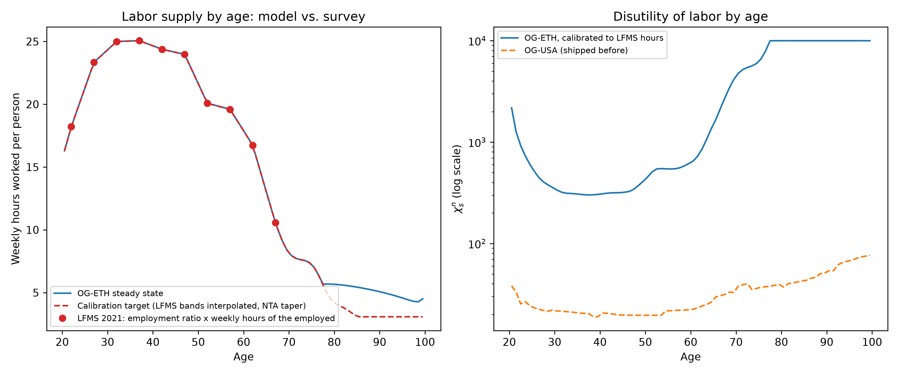
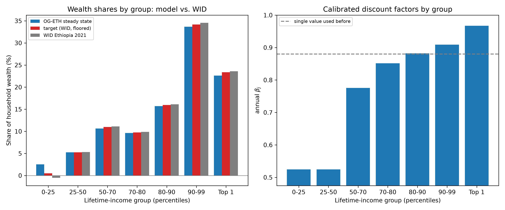

Calibration of Household Preference Parameters#
Behavioral Assumptions#
Elasticity of labor supply#
As discussed in the OG-Core household theory documentation, we use the elliptical disutility of labor function developed by [Evans and Phillips, 2017]. We then fit the parameters of the elliptical utility function to match the marginal disutility from a constant Frisch elasticity function. OG-ETH users enter the constant Frisch elasticity as a parameter. [Peterman, 2016] finds a range of Frisch elasticities estimated from microeconomic and macroeconomic data. These range from 0 to 4. Peterman makes the case that in lifecycle models without an extensive margin for employment the Frisch elasticity should be higher. For OG-ETH we take a default value of 0.4 from [Altonji, 1986].
Disutility of labor by age#
The age profile of the disutility of labor, \(\chi^n_s\), sets how much labor households of each age supply in equilibrium. Every OG-Core country model has so far shipped the eighty values estimated for the United States in OG-USA unchanged, OG-ETH included, and none has documented that fact; the estimation code inherited with them did not run (issue #71). OG-ETH now calibrates \(\chi^n_s\) to Ethiopian hours.
The target is hours worked per week per person by age from the 2021 Labour Force and Migration Survey of the Ethiopian Statistics Service [Ethiopian Statistics Service, 2021]: the employment-to-population ratio (Table 5.1) times the mean weekly hours of the employed (Table 5.16a), in five-year age bands. Per person rather than per worker because the model has no extensive margin — every household of an age supplies some labor — so the model’s average labor supply by age corresponds to hours per person in the data, with the non-employed counted at zero. Following OG-USA, labor supply is measured as a share of a 16-hour waking day, seven days a week, so a target of 25 hours a week is \(n \approx 0.22\). Ethiopian hours per person rise from 18 a week at ages 20–24 to about 25 at 30–44, fall to 20 in the fifties and 16 at 60–64, and are still 10.6 at 65 and over: participation stays high into old age because most work is self-employed farming, but hours per worker are low (32 a week at their peak against 40 in the United States) and participation among the young is held down by schooling and underemployment. The survey’s last band is open (65+), so beyond age 67 the target tapers with the National Transfer Accounts labor-income profile used in Lifetime Earnings Profiles, which falls faster than hours alone, and it never goes below two percent of the time endowment.
The calibration solves the steady state repeatedly. Between solves each \(\chi^n_s\) is rescaled by the ratio of the marginal disutility of labor at the model’s average labor supply to that at the target, which is the exact adjustment to the household’s labor first-order condition when consumption and prices are held fixed; the steady state then re-solves with the new profile, and the loop stops when every age between 20 and 79 is within two percent of its target. Starting from the OG-USA profile it converges in six solves, and from a previous calibrated profile in one or two, the last within 1 percent at every age below 78; from 78 on \(\chi^n_s\) sits at OG-Core’s cap of 10,000, those ages are left out of the fit, and the oldest households work about two hours a week more than the extrapolated target (python -m ogeth.labor runs it and writes the result into the packaged parameters).
Age |
LFMS 2021, hours per person per week |
Model steady state |
|---|---|---|
20–24 |
18.6 |
18.6 |
25–29 |
23.2 |
23.2 |
30–34 |
24.9 |
24.9 |
35–39 |
24.9 |
24.9 |
40–44 |
24.4 |
24.4 |
45–49 |
23.3 |
23.3 |
50–54 |
20.3 |
20.3 |
55–59 |
19.1 |
19.1 |
60–64 |
15.9 |
15.9 |
65–69 |
10.2 |
10.3 |
70–79 (NTA taper) |
6.6 |
7.0 |
80–99 (NTA taper, \(\chi^n\) at its cap) |
3.2 |
5.3 |


Fig. 1 Steady-state average labor supply by age against LFMS 2021 hours per person, and the calibrated \(\chi^n_s\) against the OG-USA profile.#
The calibrated profile is far from the US one, in level and in shape. With the US values Ethiopian households in the model worked about 46 percent of their time endowment at every age from 20 to 64, twice the survey’s hours; the disutility weights that bring them to the data are 300–500 in the prime ages against 20–25 in OG-USA, about 2,200 at age 20, and they climb steeply after 60 to OG-Core’s upper bound of 10,000 around age 80, where the target is an extrapolation and little labor is supplied in any case. The level of labor supply halves, which the model absorbs through the factor that converts model units to birr; the calibrated ratios in Calibration of Macroeconomic Parameters are not affected by it, and the steady-state return on capital is unchanged to the third decimal.
Two limits. Hours per person mix the decision to work with hours conditional on working, and the elliptical disutility function governs both through one intensive margin, so the Frisch elasticity of 0.4 above should be read as applying to total hours per person. And \(\chi^n_s\) has no lifetime-income dimension in OG-Core, so differences in hours between the formal and informal groups (OG-ZAF’s #95 looks at the same limit) cannot be represented; the model’s groups differ in hours only through their wealth and productivity.
Intertemporal elasticity of substitution#
The default value for the intertemporal elasticity of substitution, \(\sigma\), is taken from [Attanasio et al., 1999]. We set \(\sigma=1.5\).
Discount factors by lifetime-income group and the distribution of wealth#
Households in OG-Core save for retirement and to leave bequests, and the strength of those motives by lifetime-income group is what shapes the distribution of wealth beyond what the earnings profiles imply. OG-USA matches the US wealth distribution with heterogeneous discount factors \(\beta_j\) — richer groups discount the future less and so save a larger share of their income — and OG-ETH follows that convention. The bequest weight \(\chi^b_j\) stays at OG-USA’s 80 for every group.
The targets are the World Inequality Database’s net personal wealth shares for Ethiopia [World Inequality Lab, 2024] (equal-split adults, 2021): the bottom half of adults hold 4.8 percent of wealth, the middle 40 percent 37.1, the top decile 58.1 and the top percent 23.6; the wealth Gini is 0.735. The seven groups’ targets are read off the cumulative shares at the 25th, 50th, 70th, 80th, 90th and 99th percentiles, as for the income shares in Lifetime Earnings Profiles. The bottom quarter’s share is negative in the data (−0.5 percent; they are net debtors), which the model’s households, who cannot borrow, cannot reproduce, so that group is given a floor of half a percent and left out of the fit. The level of the discount factors is set at the same time so that steady-state household wealth is 2.15 times GDP, the anchor built from the Penn World Table capital stock, the FDI stock and domestically held debt in Calibration of Macroeconomic Parameters — the same anchor that fixed the single \(\beta = 0.88\) before.
The calibration is part of the joint steady-state matching in ogeth.calibrate.match_steady_state (python -m ogeth.calibrate), which solves the steady state repeatedly and after each solve moves every group’s \(\beta_j\) by the ratio of its target to its model wealth share, and all of them together by the ratio of the wealth anchor to the model’s wealth-to-GDP ratio, alongside the updates of \(\chi^n_s\), the pension coverage scale and the compliance scale described in Taxes in OG-ETH. A group’s steady-state wealth is very elastic to its discount factor, so those updates are heavily damped (an exponent of 0.3, and no more than three percent a solve), and a solve that fails is retried from halfway back.


Fig. 2 Left: the steady-state share of household wealth held by each lifetime-income group against the WID target (with the bottom quarter floored) and the raw WID shares. Right: the calibrated annual discount factors \(\beta_j\) against the single 0.88 used before.#
The calibrated discount factors are 0.525 for the two groups in the bottom half, 0.775, 0.852 and 0.882 for the 50th–90th percentiles, 0.909 for the 90th–99th and 0.967 for the top percent (matched on the history-anchored baseline’s steady state, Two baselines: history-anchored and program); steady-state household wealth is 2.16 times GDP against the 2.15 anchor. The resulting wealth shares are within 3.5 percent of WID’s for every fitted group (5.3, 10.6, 9.6, 15.7, 33.7 and 22.6 percent against 5.3, 11.0, 9.8, 16.0, 34.2 and 23.4), while the floored bottom quarter holds 2.5 percent — the model’s poorest households still save something for old age. The spread is wide, and the low end has independent support: a 0.525 annual discount factor is a discount rate of about 90 percent, and the one experimental measurement of time preference in Ethiopia, among 262 farm households in the highlands, found median annual rates of 43 to 105 percent depending on the horizon, rising with poverty ([Yesuf and Bluffstone, 2008]). The 0.978 at the top is in the range OG-USA estimates for the richest US groups. Two cautions: the wealth shares WID reports rest on the same consumption surveys as its income shares and a borrowed top correction, and with heterogeneous patience the model’s response to a reform is no longer that of a representative saver — the top percent, which holds a quarter of the wealth, reacts much more to the return on capital than the bottom half does.
Rate of time preference#
The rate of time preference, \(\beta\), is calibrated to Ethiopia’s capital-output ratio rather than borrowed from the US literature. With the US value of \(\beta = 0.96\) ([Carroll, 2009]), which the OG-Core country models inherit by default, the OG-ETH steady state has a capital-output ratio near 2.9 and gross investment above 40 percent of GDP, against a Penn World Table capital-output ratio of about 2.2 and investment of 20–28 percent of GDP in the IMF program ([International Monetary Fund, 2026], Table 1). In a closed economy the steady-state return on capital is close to \(1/\beta - 1\) and the capital-output ratio is \(K/Y = \gamma/(r + \delta)\), so matching \(K/Y \approx 2.2\) with the calibrated capital share \(\gamma = 0.30\) and depreciation of 5 percent would require \(r \approx 8.6\) percent and hence \(\beta \approx 0.92\). In the open economy the adjustment through patience alone is partial, because foreign capital enters as domestic saving falls: at \(\beta = 0.92\) with the 4 percent world rate the return settled near 5.8 percent, the capital-output ratio at 2.6, gross investment at 36 percent of GDP and the foreign-owned capital stock at 0.37 of GDP, half again the FDI stock in the data. The capital block therefore has two levers, and both are set to data: a world rate of 6.3 percent, the measured return on inward FDI in Africa, which brings the foreign-owned capital stock to the FDI stock, and \(\beta = 0.88\) (annual, then a single value for all lifetime-income groups; the section above now lets it differ by group around that level). The patience value follows from counting public capital: the Penn World Table’s 2.2 is total capital, and with public capital at 0.29 of GDP in the model (5.1 percent of GDP of public investment at 2 percent depreciation) the private capital-output ratio consistent with it is about 1.9, which at a 30 percent capital share and 5 percent depreciation — Ethiopia’s Penn World Table depreciation rate — means a return on capital near 9 percent. At \(\beta = 0.90\) private capital had settled at 2.4 times GDP (2.65 in total) and investment at 33 percent of GDP against the program’s 27; \(\beta = 0.88\) puts household wealth near the 2.15 initial-wealth anchor built from the same sources in Calibration of Macroeconomic Parameters. A high return on capital is the flip side of Ethiopia’s scarce capital, and \(\beta = 0.88\) is at the low end of the range used in low-income-country OLG calibrations; the steady-state validation table in Calibration of Macroeconomic Parameters reports what the solved model delivers.